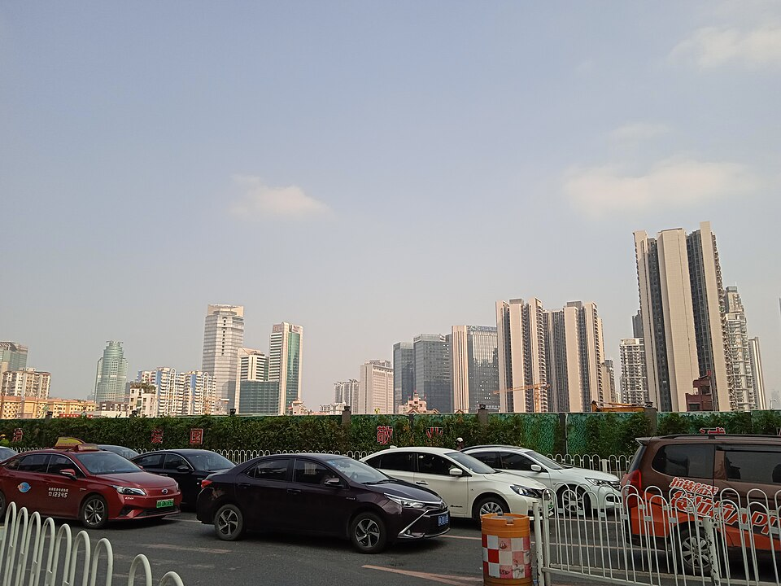
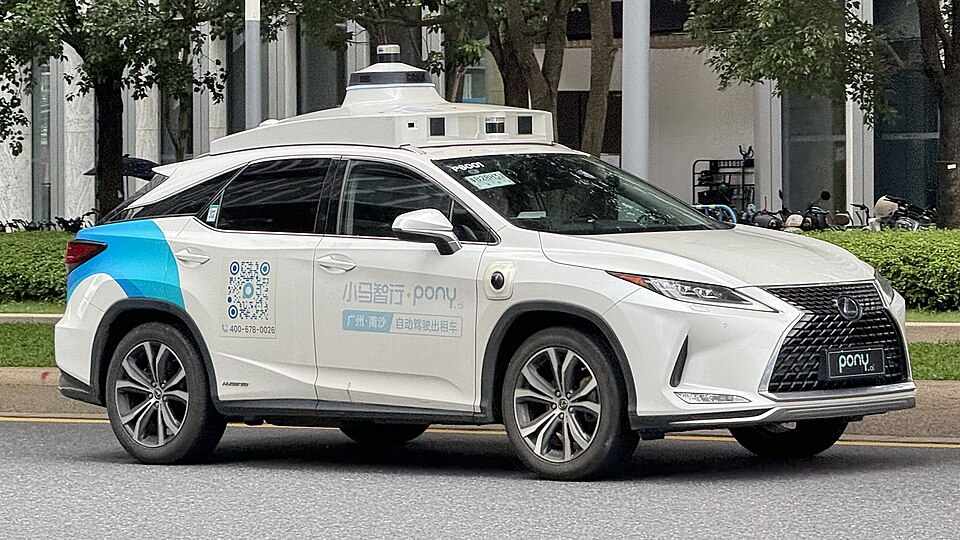
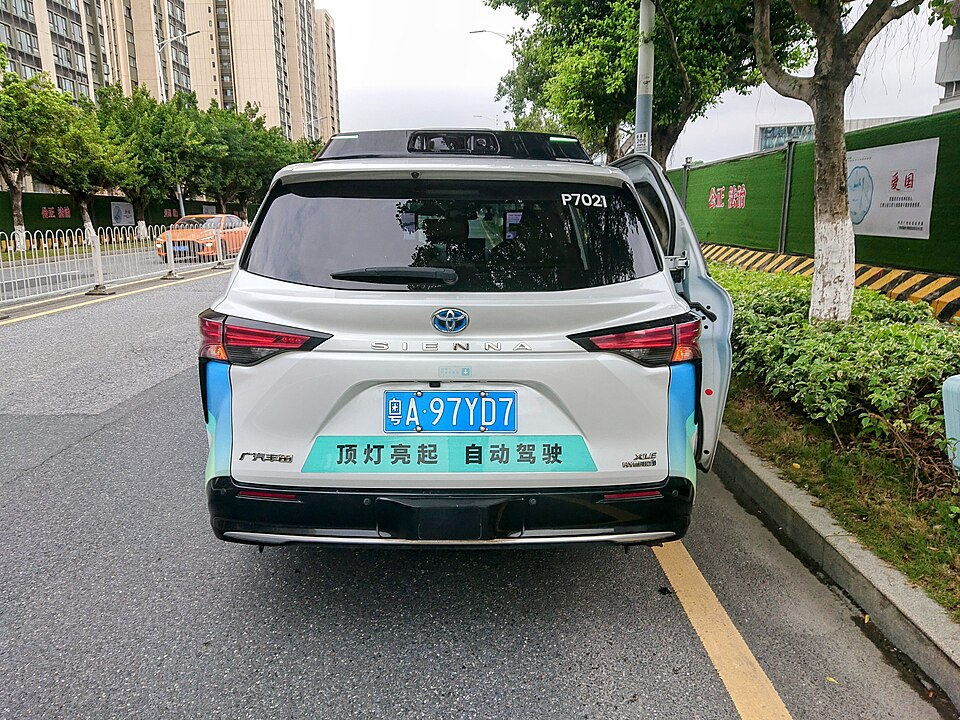
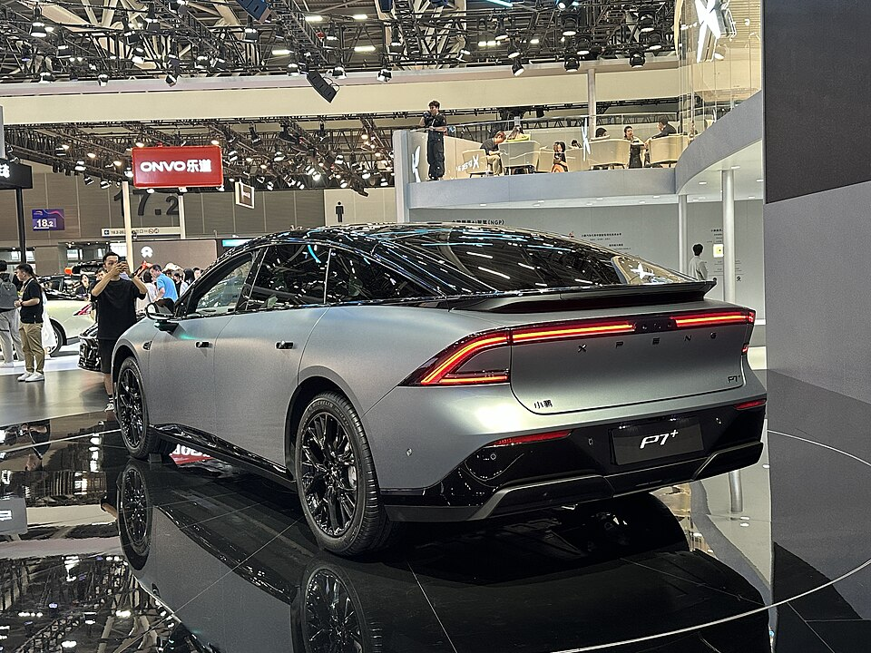
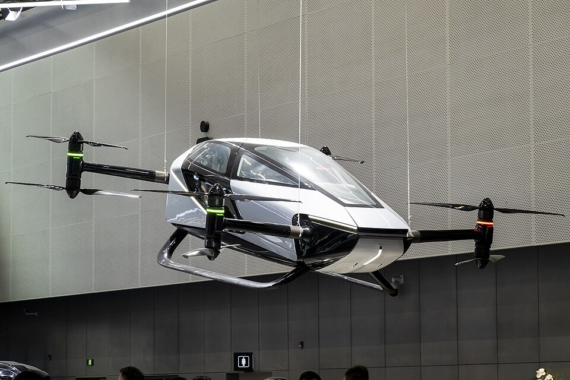
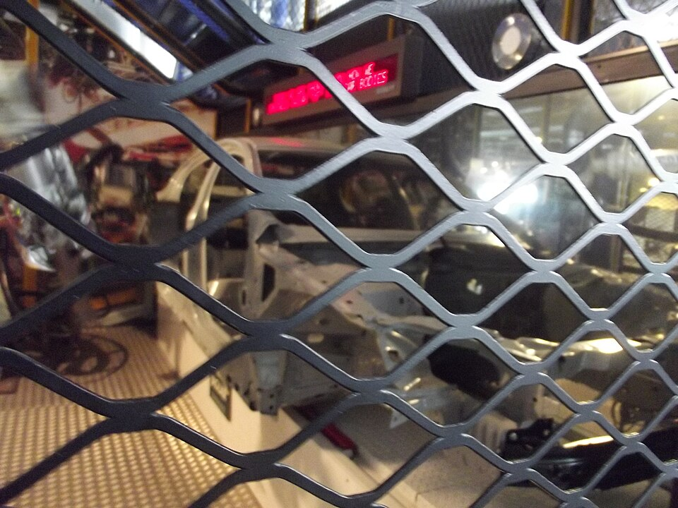
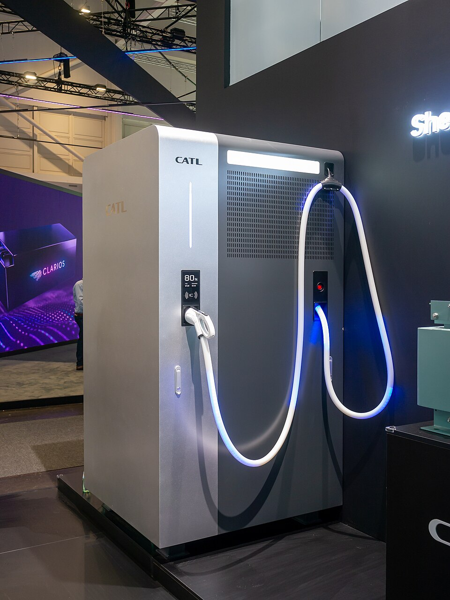
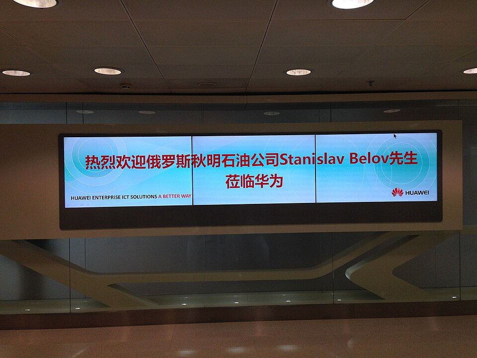
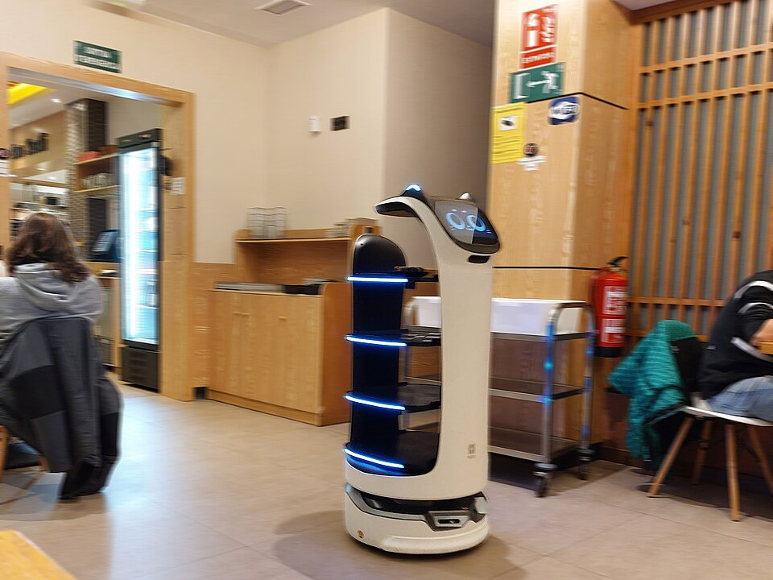

Mo 09. – Fr 13.11.2026 · Guangzhou · Zhaoqing · Shenzhen | Status: angemeldet und bestätigt · Flüge gebucht · Programm Stand 27.10.2026
ToDo
Haken bleiben im Browser gespeichert.
Erledigt:
Park Hotel Hongkong antwortet 24.10.: Check-in regulär 14:00, früher nur wenn frei — sonst Gepäck beim Concierge, Hotel meldet sich, sobald das Zimmer bereit ist
Crowne Plaza Shenzhen Nanshan gebucht, Bestätigung ••••: Mi 11. – Fr 13.11., King Standard, CNY 2.599,98 gesamt, Storno kostenlos bis 06.11. 18:00
Grand Hyatt Guangzhou gebucht, Bestätigung # ••••: So 08. – Mi 11.11., King Bed, CNY 3.450 gesamt, Storno bis 7 Tage vorher kostenlos
Flüge gebucht, Cathay ••••: CX 300 Do 05.11. München → Hongkong (Exit 59C), Fähre CX 9828 13.11., CX 301 Premium Economy zurück
Hotel Hongkong gebucht (Park Hotel, 06.–08.11.)
Kurzfragebogen und Passkopie am 21.10. an das AC
Teilnahme am 19.10. vom AC bestätigt, kein Visum nötig, Graz geklärt
gelöstExecutive Summit Graz, 11.11. — nach deinem Anruf am 13.10. macht der Premium Leaders Club an dem Abend statt des Summits ein Business & Friends. Du bist dort nicht mehr als Speaker eingeplant, der Termin kollidiert nicht mehr (Bestätigung Leonie Haecker, 14.10.2026).
Warum die Reise für Christoph passt
Fast das komplette Programm bedient Christophs Kernthemen direkt vor Ort: autonomes Fahren (Pony.ai-Robotaxi-Fahrt, XPeng, BYD „God's Eye"), humanoide & Service-Robotik (EngineAI, Pudu, XPeng Iron) für „Wenn die Babyboomer gehen und die Roboter kommen", Batterie als neues Öl (CATL, Inpow, BYD) und Tech-Souveränität (Huawei trotz Sanktionen). Dazu zwei Österreich-Anker: GAC × Magna (Aion-Fertigung für Europa) und der Netzwerkabend bei XXXLutz Guangzhou. Kein Honorar-Auftritt, aber erstklassiges Keynote-Material, Foto-/Video-Motive und Investoren-Einblicke (Deep-Tech).
fix · AWO ProgrammpunktFoto-Motiv Bühnen-/Social-Material?Auftritt Impuls anfragenTransferselbst Flug/eigene OrgaoptionalJetlag Licht, Schlaf, Melatonin gegen die sieben Stunden
Zeitplan
Programm-Stand 27.10.2026 (AC Guangzhou, Änderungen vorbehalten). Montag nur Pony.ai ab 13:00 Lobby Grand Hyatt, XPeng HQ auf Dienstagfrüh, Dienstagabend Netzwerkabend bei XXXLutz (nur Fragen, kein Impuls), Freitag Mingyang in Zhongshan statt MOCAUP und Ping An.
Do 05.11.2026Anreise · St. Johann → München → Hongkong (nonstop)
ab Mo 02.11.
JetlagVorlauf daheim: drei Abende früher ins Bett
Mo 02.11. Bett 21:00 / Wecker 04:00 · Di 03.11. Bett 20:15 / Wecker 03:30 · Mi 04.11. Bett 19:30 / Wecker 03:00. Morgens sofort helles Licht, abends gedämpft.
AnsatzSteht im Privatkalender. Mi 04.11. Vorstandssitzung bis 19:00 — pünktlich gehen.
03:00
JetlagWecker, Licht, Bupropion 03:30
Nicht durchmachen — Schlafmangel senkt mit Bupropion die Krampfschwelle. Kaffee nur bis 11:00, kein Nickerchen bis zum Flug.
08:3010:001:30 h
TransferSt. Johann → Flughafen München
Auto rund 1:30 Stunden, Parken bis Sa 14.11.
10:0011:001:00 h
Check-inGepäckabgabe CX 300 und Kontrollen
München Terminal 1, Cathay Pacific. Der Bag-Drop schließt 11:00, 60 Minuten vor Abflug. 23 kg Freigepäck.
11:1511:400:25 h
BoardingBoarding CX 300
Boarding ab 11:15, das Gate schließt 11:40. Sitz 59C (Exit-Reihe).
12:0006:00Landung Fr 06:00 Ortszeit = 23:00 Wien11:00 h
gebucht · ••••CX 300 München (MUC) → Hongkong (HKG), nonstop
Cathay Pacific, Airbus A350-900, Economy mit Exit-Platz 59C, 11:00 Stunden. Ticket ••••.
an Bord
JetlagSchlafen ca. 17:00–23:00 Wien = Nacht in Hongkong
Essen gleich nach dem Start, dann Augenmaske. Lendormin nur bei Bedarf, spätestens 17:00 Wien, mit dem Arzt abgestimmt. Kompressionsstrümpfe, vorher trinken und aufstehen.
Fr 06.11.2026Hongkong · Ankunft, Tag 1
06:0007:301:30 h
TransferEinreise, Flughafen → Park Hotel
Airport Express bis Kowloon, dann Taxi — oder direkt Taxi, ca. 40 Minuten. Park Hotel Hong Kong, 61–65 Chatham Road South, Tsim Sha Tsui.
07:30
HotelCheck-in Park Hotel (2 Nächte, Frühstück)
Check-in regulär 14:00, früher nur wenn frei. Sonst Gepäck beim Concierge, Hotel meldet sich.
bis 11:00
JetlagSonnenbrille, dann Tageslicht · Bupropion 11:00
Licht vor 11:00 dreht die Uhr falsch. Höchstens 30 Minuten Nickerchen, wach bis 22:00.
12:3014:001:30 h
?RotaryMake-up beim Rotary Club Kowloon North
Lunch-Meeting, Englisch, 1. und 3. Freitag. Holiday Inn Golden Mile, Crystal Room B3/F, 50 Nathan Road, Tsim Sha Tsui — 10 Minuten zu Fuß vom Park Hotel. Kontakt: board@rckn.org, +852 2366 2668, rckn.org. Vorher per Mail anmelden, Stattfinden bestätigen lassen.
AnsatzMittag statt Abend: passt zur Landung um 06:00 und zur Bettzeit 22:00. Wimpel vom eigenen Club mitnehmen.
22:00
JetlagBett · evtl. Melatonin 0,5–1 mg
Kein Lendormin, kein Alkohol.
Sa 07.11.2026Hongkong · freier Tag
morgens
JetlagMorgenlicht, Koffein bis mittags · Bupropion 1–2 h früher
Ab Tag 2 wirkt Morgenlicht in die richtige Richtung.
ganztags
freiHongkong
Victoria Peak, Star Ferry, Tsim Sha Tsui Promenade — viel draußen im Tageslicht.
22:00
JetlagBett · evtl. Melatonin
So 08.11.2026Hongkong → Guangzhou (Zug G6514)
bis 12:00
HotelCheck-out Park Hotel, Gepäck beim Concierge
6:00 h
6:00 h frei zwischen 12:00 und 18:00
18:0018:150:15 h
TransferTaxi Tsim Sha Tsui → Hong Kong West Kowloon Station
Rund 10–15 Minuten.
18:1518:550:40 h
Check-inTicket, Sicherheits- und Grenzkontrolle im Bahnhof
Hongkong-Ausreise und China-Einreise im selben Gebäude (Co-Location). Mindestens 45 Minuten vorher da sein. China Arrival Card bereithalten.
19:0020:001:00 h
Zug · noch buchenG6514 West Kowloon → Guangzhou Süd (Guangzhounan)
Direktzug ohne Halt, 60 Minuten. Fahrplan MTR ab 11.10.2026. Ticket noch kaufen: MTR-High-Speed-Rail-Website, 12306 oder Trip.com — Reisepass nötig (Real-Name). Alternative: G6532 ab 20:57, an 22:03.
20:0020:450:45 h
TransferTaxi Guangzhou Süd → Grand Hyatt
Rund 35–45 Minuten nach Zhujiang New Town, 12 Zhujiang West Road. Didi oder Taxistand am Bahnhof.
20:45
HotelCheck-in Grand Hyatt Guangzhou (Bestätigung ••••)
3 Nächte bis Mi 11.11. Am Montag ausschlafen, Treffpunkt erst 13:00 in der Lobby.
22:00
JetlagBett · evtl. Melatonin
Mo 09.11.2026Guangzhou · Pony.ai
08:0012:304:30 h
freiAusschlafen, Frühstück im Grand Hyatt
Grand Hyatt Guangzhou, 12 Zhujiang West Road, Zhujiang New Town. Die übrige Gruppe landet erst 10:25 und checkt gegen 12:20 ein.

Guangzhou · Zhujiang New Town
0:30 h
0:30 h frei zwischen 12:30 und 13:00
13:00
TreffpunktLobby Grand Hyatt
Vom AC am 27.10. bestätigt: Zustieg am Grand Hyatt.
13:1514:301:15 h
TransferBus zu Pony.ai (Nansha)
Pony Smart Operation Centre, Building 8, Datang Industrial Park Phase II, Nansha District.
14:3016:001:30 h
Foto-MotivPony.ai — Fahrt im Robotaxi (Gen-7)
L4-Robotaxi (NASDAQ seit 11/2024), Partner Toyota, GAC, Neom. Ablauf: Robotaxi-App und Sicherheitshinweise (5 min), Robotaxi-Fahrt (15 min), Showroom (30 min), Q&A und Gruppenfoto (10 min).
AnsatzDas experienzielle Herzstück: Selbst im fahrerlosen Taxi sitzen = „autonomes Fahren ist in China Alltag“ gegen EU-Regulierung. Hochkant-Video aus dem Fond (Lenkrad dreht ohne Fahrer) — bestes Social-Asset der Reise.

Pony.ai-Robotaxi (Guangdong)

Robotaxi-Flotte Guangzhou
16:0017:001:00 h
TransferBus zurück ins Grand Hyatt
Abend zur freien Verfügung.
4:30 h
4:30 h frei zwischen 17:00 und 21:30
21:30
JetlagMelatonin 0,5–1 mg, Zimmer abdunkeln
Schnell freisetzend, zur lokalen Schlafenszeit, höchstens fünf Nächte. Dosis einmal daheim testen. Mehr als 1 mg wirkt nicht besser.
AnsatzDienstag startet 08:50 und endet erst abends bei XXXLutz — früh schlafen.
Di 10.11.2026XPeng HQ · Zhaoqing (XPeng-Fabrik, CATL) · Netzwerkabend XXXLutz
vor 08:50
JetlagMorgenlicht, Koffein nur bis mittags
Vor der Abfahrt kurz raus oder ans Fenster. Letzter Kaffee 12:00 Ortszeit, Mittagsschlaf höchstens 20 Minuten.
AnsatzLanger Tag bis in den Abend — im Bus nach Zhaoqing höchstens kurz dösen.
08:50
TreffpunktTreffen in der Hotel-Lobby
09:0009:300:30 h
TransferBus zu XPeng (Headquarter, Tianhe)
Xiaopeng Technology Park, T2 North Gate, Fengzhuang Avenue, Cencun.
AnsatzDas Vorzeige-Narrativ „eine KI, drei Formfaktoren“: Auto, Flugauto, humanoider Roboter aus einem Haus. Stärkstes „Zukunft“-Bild der Reise. Frag nach dem End-to-End-Fahrstack (Turing-Chip) — Vergleichszahl zu Europa, die sonst niemand auf der Bühne hat.

XPeng P7+

XPeng X2 eVTOL (Auto Guangzhou)
10:3011:501:20 h
TransferBus nach Zhaoqing (Soogie International Hotel)
Yingbin Avenue, Dawang High-Tech Zone, Zhaoqing.
11:5013:301:40 h
fix · AWOVorstellung der Zhaoqing Hi-Tech Zone und Mittagsnetzwerk
Soogie International Hotel. Die chinesischen Gastgeber stellen sich vor — kein Slot für deinen Impuls (AC, 27.10.).
13:3013:450:15 h
TransferBus zur XPeng-Fabrik
No. 33 Longhu Avenue, Sihui, Zhaoqing.
13:4515:001:15 h
fix · AWOXPeng — Produktionsbesichtigung
Rundgang durch das Werk.
Ansatz„Fabrik der Zukunft“ zum Anfassen — hochautomatisierte EV-Linie. Fotos in den meisten Werken verboten, das AC sagt jeweils vorher Bescheid.

Fertigungsroboter · Symbolbild
15:0015:100:10 h
TransferBus zu CATL
No. 1 Shidai Street, Zhaoqing High-Tech Zone.
15:1015:500:40 h
fix · AWOCATL — Fabrik (Ruiqing Times, Zhaoqing)
Weltgrößter Batteriehersteller (~37 % Marktanteil). Showroom-Tour, Produktionslinie durch Schaufenster.
AnsatzKernbotschaft „Die Batterie ist das neue Öl“ — Europas Abhängigkeit. Frag nach Natrium-Ionen (post-Lithium), Shenxing-Schnellladen und Batterietausch. Nur 40 Minuten — Fragen vorher festlegen.

CATL (Messestand IAA)
15:5017:301:40 h
TransferBus zum Netzwerkabend bei XXXLutz Guangzhou
Floor 30, Guangzhou International Commercial Center, 235 Tianhe North Road, Tianhe.
17:3020:002:30 h
fix · AWONetzwerkabend bei XXXLutz Guangzhou
Ende im Programm offen. Kein Impuls vorgesehen — hier kannst du Fragen stellen (AC, 27.10.).
AnsatzZwei, drei gute Fragen vorbereiten, die zeigen, wer du bist: z. B. wie XXXLutz in China mit KI im Handel und autonomer Logistik arbeitet.
TreffpunktCheckout, Treffen in der Lobby, Gepäck in den Bus
0:10 h
0:10 h frei zwischen 08:10 und 08:20
08:2009:150:55 h
TransferBus zu GAC Aion (Panyu)
No. 36 Longying Road, Shilou Town.
09:1510:151:00 h
fix · AWOGAC Aion (Panyu)
Einer der größten Autobauer Chinas; E-Marke Aion. Ab 2025 Kooperation mit Magna in Österreich — Aion V & Aion UT für Europa; Markteintritt EU bis 2028. Showroom, Produktionslinie.
AnsatzDein stärkster Österreich-Haken: „China kommt über Graz/Magna nach Europa.“ Direkt anschlussfähig an deinen Magna-Vortrag (10.10.2025). Lokale Relevanz = Bühnen-Gold im DACH-Publikum.
Vollständige Wertschöpfungskette Zelle → System. Zellen überstehen Nadelstich, 360°-Verdrehung und dreifache Faltung ohne Rauch/Brand; „Exzellenz-Smart-Factory“. Gruppenfoto, Showroom (20 min), Produktionslinie durch Schaufenster (20 min).
AnsatzFoto-Motiv „Sicherheits-Demo“ (Nadelstich/Faltung) — plakatives Bild für Batterie-Sicherheit.
Li-Ion-Zellen · Symbolbild
11:1012:101:00 h
TransferBus zum Guangzhou Nansha Garden Hotel
No. 1 Dajiao 2nd Road, Nansha.
12:1013:151:05 h
fix · AWOMittagessen
13:1514:151:00 h
TransferBus zu Sunwoda (Shenzhen, Guangming)
Tongguan Road, Fenghuang Subdistrict.
14:1516:452:30 h
fix · AWOSunwoda — F&E-Basis Guangming
Seit 1997, Batterie von der Zelle bis zum System. 2025 Top 10 weltweit bei Antriebsbatterien, im 1. Quartal 2026 Nummer 1 bei HEV-Batterien; Tier-1 bei Energiespeichern (BNEF). Showroom (45 min), Präsentation und Meeting (45 min). Host: Charmant Fung, Associate Director Renewable Material Overseas Division.
AnsatzDritter Batteriebesuch nach CATL und Inpow — Weltmarktführer bei Hybrid-Batterien zeigt: Der Hybrid ist in China nicht tot.
16:4518:001:15 h
TransferTransfer zum Crowne Plaza Shenzhen Nanshan
Crowne Plaza Shenzhen Nanshan, 9819 Shennan Boulevard. Danach Check-in, Abend frei. Tipp vom AC: Nantou Ancient Town, 10 Minuten mit dem Auto.
parallel
gelöstGraz fällt nicht mehr auf diesen Abend
Der Premium Leaders Club veranstaltet am 11.11. statt des Executive Summits ein Business & Friends, du bist nicht als Speaker eingeplant. Leonie Haecker hat das am 14.10. schriftlich bestätigt und wünscht gute Reise.
AnsatzDer Vortrag „KI als Gamechanger“ bleibt für einen späteren PLC-Termin im Gespräch — bei Gelegenheit neu ansetzen.
Do 12.11.2026Shenzhen · Huawei & BYD
08:50
TreffpunktTreffen in der Hotel-Lobby
0:10 h
0:10 h frei zwischen 08:50 und 09:00
09:0009:400:40 h
TransferBus zu Huawei (Bantian-Basis, Longgang)
09:4011:101:30 h
fix · AWOHuawei (Bantian-Basis, Longgang)
Telekom-/Hardware-Riese; inzwischen auch Automotive (Kooperationen mit OEMs). Neumann Showroom (60 min), Huawei Flagship Store (30 min).
AnsatzThema „digitale Souveränität & Resilienz trotz Sanktionen“ — passt zu deinen Defence-/Souveränitäts-Impulsen (QUANTUM). Wie ersetzt Huawei die US-Lieferkette? Starke Zahl für die Bühne.

Huawei-Zentrale · Shenzhen
11:1011:250:15 h
TransferBus zum Amber Prime Hotel
6 Fada Road, Bantian, Longgang.
11:2512:501:25 h
fix · AWOMittagessen im Amber Prime Hotel (chinesisches Restaurant)
12:5013:501:00 h
TransferBus zu BYD (Pingshan)
13:5017:203:30 h
fix · AWOBYD (Pingshan)
Weltgrößter NEV-Hersteller, 1995 als Batteriebauer gegründet, voll vertikal integriert. Meeting, Showroom, Schnellladestation. Hosts: Vice GM Europe/US/Middle East/Africa Automotive Sales, Business Department Manager European Commercial Vehicles, Director European Bus Product Line.
AnsatzNarrativ „Vertikale Integration + Demokratisierung der Autonomie“ (ADAS „God's Eye“ auch im Billigsegment). Mit dem Europa-Vertrieb am Tisch: Frag nach Werk Szeged, Zöllen und Markteintritt. Vergleiche Blade-Batterie mit CATL, Inpow und Sunwoda.
TreffpunktCheckout, Treffen in der Lobby, Gepäck in den Bus
0:10 h
0:10 h frei zwischen 09:10 und 09:20
09:2009:300:10 h
TransferBus zu EngineAI (Nanshan)
Shenzhen Bay Innovation and Technology Centre, Tower T1, Room 2603.
09:3010:301:00 h
fix · AWOEngineAI — Shenzhen Engine AI Robotics
Unicorn, gegründet 2023: humanoide Roboter und verkörperte KI. Eigene Gelenkantriebe, Bewegungssteuerung, Sim2Real; Fokus B2B (Inspektion, Sicherheit, Verkehr, Forschung). Showroom und Q&A.
AnsatzStartup gegen Konzern: Vergleich mit XPengs Humanoiden vom Dienstag. Frag, wo die Roboter schon im zahlenden Kundeneinsatz laufen — Fakt statt Showroom-PR.
10:3010:500:20 h
TransferBus zu Pudu Robotics (Xili, Nanshan)
Shenzhen International Innovation Valley, Building 2, Block A, 11. Stock.
Ansatz„Fachkräftemangel zum Anfassen“ (wie die Cobots in Korea) — Serviceroboter als Antwort auf Demografie. Gastro-Roboter = sympathisches, alltagsnahes Bild.

Pudu Serviceroboter
12:2012:300:10 h
TransferTransfer zum Mittagessen
Ort noch offen.
12:3013:501:20 h
fix · AWOMittagessen
13:5015:001:10 h
TransferBus nach Zhongshan zu Mingyang
No. 22 Huoju Road, Torch High-Tech Zone, Zhongshan, Südtor. Über die Shenzhen-Zhongshan-Brücke.
15:0016:301:30 h
fix · AWOneu · Mingyang Smart Energy (Zhongshan)
Chinas führender Hersteller von Windkraftanlagen (601615.SH), Wind, Solar, Speicher, Wasserstoff. Weltweit Top 3 Windenergie, Spitze bei Offshore-Innovation. Meeting, Showroom. Ersetzt MOCAUP und Ping An.
AnsatzEnergiewende als Industriepolitik: Offshore-Wind in Chinas Tempo gegen europäische Genehmigungsdauer.
Gruppenbus fährt zum Flughafen SZX — du nicht. Transport organisiert das AC, Kosten per Vorschreibung (Angebot vom 27.10. angenommen). Rund 60–75 Minuten über die Shenzhen-Zhongshan-Brücke. Gepäck mitnehmen.
0:15 h
0:15 h frei zwischen 17:45 und 18:00
18:0019:151:15 h
Check-inCheck-in Fähre, Gepäck bis München durchchecken
Shekou Cruise Center. Nur für Transitgäste. Das AC warnt: Die Fähre ist in der Praxis komplizierter als gedacht — Puffer bewusst groß.
1:00 h
1:00 h frei zwischen 19:15 und 20:15
20:1520:55Ankunft 20:55 Ortszeit = 13:55 Wien0:40 h